How to build error free web app
while having fun
with Elm and functional programming
Contents
- what is Elm
- why use it
- functional programming for dummies
- Elm features
- how it compares to JS
- the downsides
- demo
What is Elm
Elm is a domain specific language to build SPA
Every framework you’ve ever seen is really just an echo of this statement: "My language sucks!"
Robert C. Martin
Why use Elm
Runtime error free
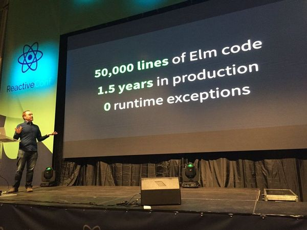
No unintended side effects
Great developer experience

Less to be tested

Only one way to do things
Change way of thinking
I don’t want to think about code, I want to think about concepts
Guillaume Hiverté
Entry point to FP for front-enders
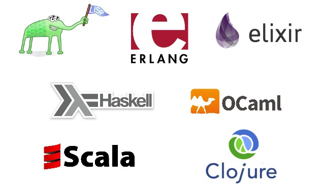
FP for dummies
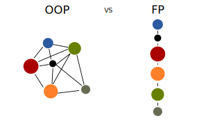
Pure function
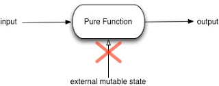
Immutable values
Function composition
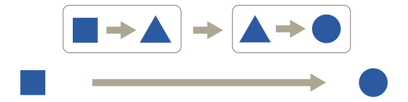
First-class functions
- Lambda functions
- Closures
- Higher-order functions
Partial application/Currying
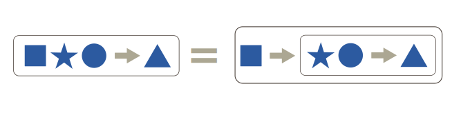
Features
Static types
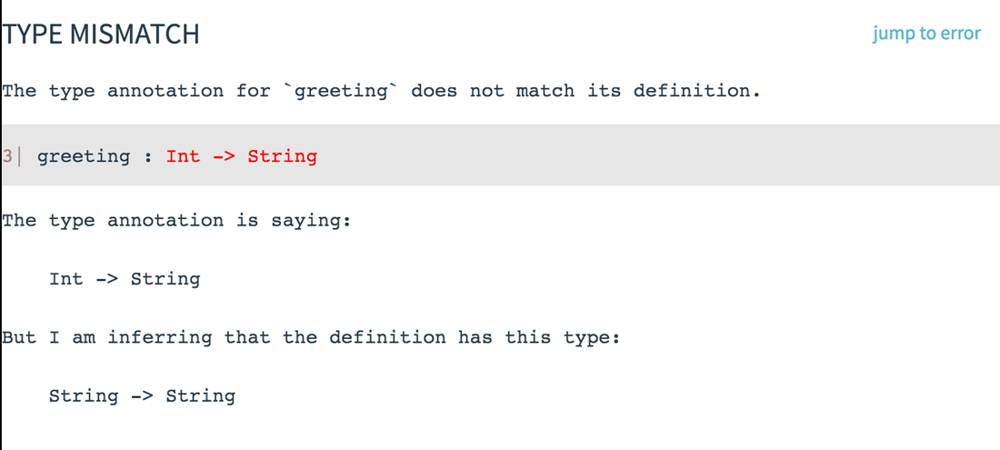
Friendly compiler that prevents syntax errors
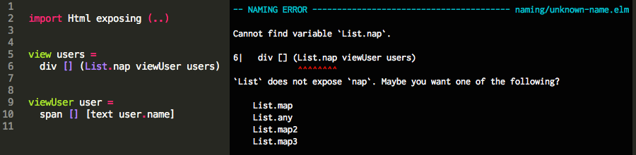
Everything is a pure function -> no unintended side effects
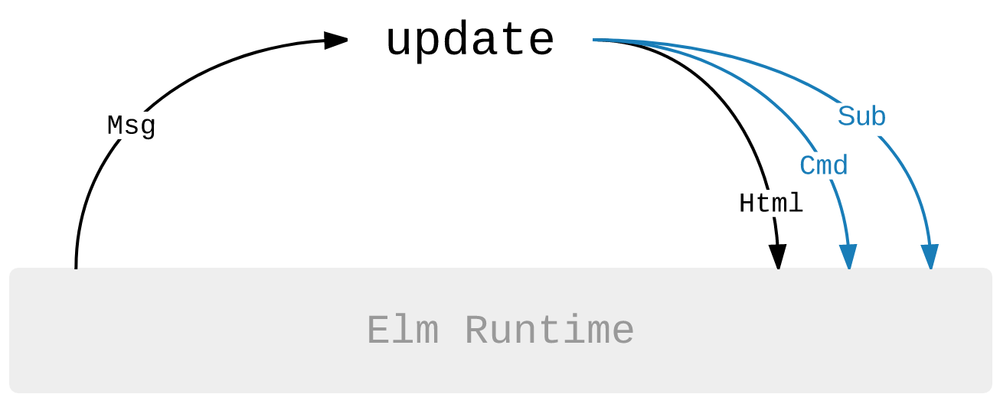
Currying by default
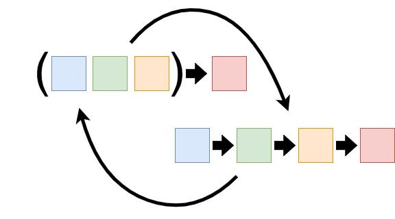
Immutability
Modules
The Elm Architecture(TEA)
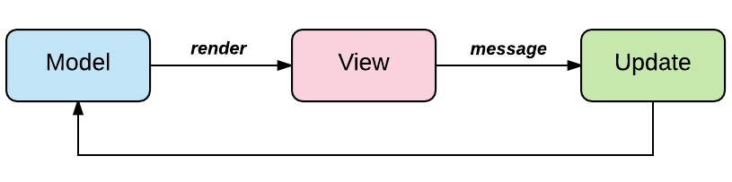
JS interoperability
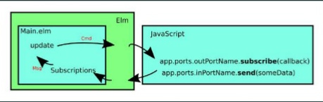
Package manager with enforced semantic versioning
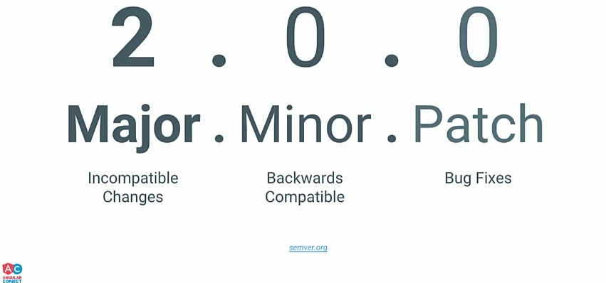
Strongly opinionated: only 1 way to do something
Html templating without additional language/syntax
Elm vs JS
JS

Elm
Elm could be compared to:
- TypeScript
- ESLint
- Immutable.js
- Ramda.js
- React
- JSX
- Redux
- Redux-thunk
- React Router
- (Npm)
- (Webpack)
The downsides
- Smaller ecosystem compared to Js
- Cannot perform any operation that requires to mess up with the DOM
- Single state + stateless view -> need to pass state to every level
- Tricky animations (as in React but with less tools to help)
Resources
Syntax
-- comment
-- variable declaration and assignment
myList = [1,2,3]
-- function declaration
myFunc num1 num2 =
num1 + num2
-- function call
myFunc 1 2
Data Structures
myList = [1,2,3]
-- Record
myRecord = {
name: "pippo"
, surname: "pluto"
}
myUnionType = Number | String
myTuple = (1, 2)
DEMO TIME!
Recap
- Core principles of FP
- Advantages of Elm over other front end stack
- Elm shortcomings
- Example on an Elm program